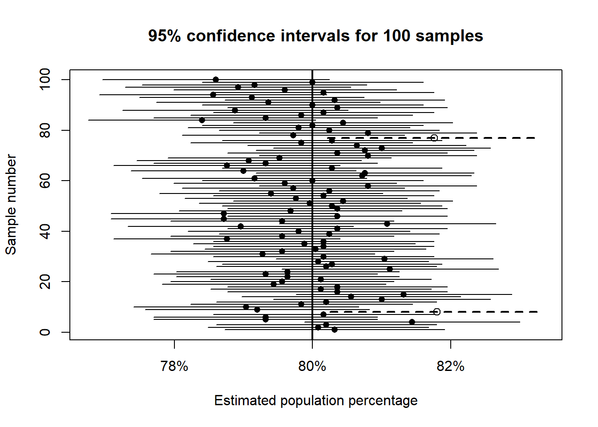

set.seed(123)
n <- 2500
p_true <- 0.80
sample_draw <- rbinom(n, size = 1, prob = p_true)
p_hat <- mean(sample_draw)
se_hat <- sqrt(p_hat * (1 - p_hat) / n)
p_hat[1] 0.8032se_hat[1] 0.007951598By the end of this chapter, you should be able to:
A politician is deciding whether to enter an election. In a village of 100,000 eligible voters, a survey of 2,500 people finds that 1,328 support the candidate, which is about 53%.
Should the politician run?
At first glance, the answer seems obvious: 53% is greater than 50%. But this conclusion depends on how accurate the estimate is. The key question is:
How far might the sample percentage be from the true population percentage?
A sample percentage is only an estimate. It is subject to chance error due to random sampling.
The sample percentage, 53%, is a point estimate of the population percentage. But different random samples would give slightly different results.
To quantify this uncertainty, we use the standard error (SE).
For a percentage, the standard error is:
\[ SE(\%) = \frac{SD(\text{box})}{\sqrt{n}} \times 100 \]
But there is a problem: we do not know the standard deviation of the box/population.
We go around this problem by using the sample itself to estimate variability.
In this case:
The standard deviation of the sample, which we denote \(SD^+\) of such a 0–1 variable is approximately:
\[ SD^+ = (1-0) \sqrt{0.53 \times 0.47} \approx 0.5 \]
Using this, the standard error becomes approximately:
\[ SE(\%) = \frac{SD^+}{n} \times 100\% \approx 1\% \]
So the estimate of 53% is likely to be off by about 1%.
Being off by 3% would correspond to about 3 standard errors, which is unlikely.
Conclusion: The candidate is very likely above 50% support and may reasonably decide to run.
Sometimes instead of a point estimate, we can provide an interval estiate to account for uncertainty.
A confidence interval provides a range of plausible values for the population percentage.
Using the empirical rule:
In our example:
\[ 53\% \pm 2\% = [51\%, 55\%] \]
That is, a 95% confidence interval is approximately:
\[ \text{estimate} \pm 2 \times SE \]
It is tempting to say:
There is a 95% chance that the true percentage lies between 51% and 55%.
This is incorrect.
The population percentage is fixed. It does not vary.
The interval varies because it depends on the sample.
The correct interpretation is:
If we repeatedly took samples and constructed confidence intervals, about 95% of those intervals would contain the true population percentage.
Imagine drawing 100 different samples of 2,500 voters.
Each sample gives:
Some intervals will include the true value. Others will miss it.
A 95% confidence level means that about 95 out of 100 such intervals will capture the true parameter.
Let us simulate one poll where the true population support rate is 80%, and each sample contains 2,500 observations.
set.seed(123)
n <- 2500
p_true <- 0.80
sample_draw <- rbinom(n, size = 1, prob = p_true)
p_hat <- mean(sample_draw)
se_hat <- sqrt(p_hat * (1 - p_hat) / n)
p_hat[1] 0.8032se_hat[1] 0.007951598The estimated percentage is:
round(100 * p_hat, 2)[1] 80.32The estimated standard error in percentage points is:
round(100 * se_hat, 2)[1] 0.8The approximate 95% confidence interval is:
lower <- p_hat - 2 * se_hat
upper <- p_hat + 2 * se_hat
round(100 * c(lower, upper), 2)[1] 78.73 81.91Now let us simulate 100 independent samples, each of size 2,500, from a population where the true percentage is 80%.
sample_id p_hat se_hat lower upper covers
1 1 0.8032 0.007951598 0.7872968 0.8191032 TRUE
2 2 0.8008 0.007987975 0.7848241 0.8167759 TRUE
3 3 0.8020 0.007969843 0.7860603 0.8179397 TRUE
4 4 0.8144 0.007775671 0.7988487 0.8299513 TRUE
5 5 0.7932 0.008100216 0.7769996 0.8094004 TRUE
6 6 0.7932 0.008100216 0.7769996 0.8094004 TRUEHow many of these 100 intervals cover the true population percentage?
sum(results$covers)[1] 98What percentage of intervals cover the true value?
mean(results$covers) * 100[1] 98
Each horizontal line is a 95% confidence interval from one sample.
Even when the method is correct, some intervals will fail to include the true value. That is not a mistake. It is exactly what a 95% confidence level implies: about 5% of intervals will miss the true value just by chance.
A confidence procedure can be reliable without guaranteeing success in every single sample.
There are two directions of reasoning in statistics:
Confidence intervals are a tool for inductive reasoning.
Statistical inference is about learning about the population from a sample.
A simple random sample of 100 graduates from a certain college found that 48 were earning Baht 50,000 per month or more.
Suppose there is a box of 100,000 tickets, each marked either 0 or 1. In fact, 20% of the tickets are 1s.
A sample of 400 draws is taken at random.
TRUE company serves 1,000,000 subscribers. As part of a market survey, a simple random sample of 3,600 people was taken. In the sample:
Answer the following:
In a poll of 200 voters, 92 said that they would vote for the YY Party.
According to a census, a certain town has 100,000 people aged 18 and over. Of these:
A simple random sample of 1,600 people will be drawn from this population.
To study marriage, a box model is needed.
To study the proportion earning more than Baht 75,000 per month:
Find the chance that between 19% and 21% of the sample have a university degree.
A survey of 400 people finds that 80 have health insurance.
A utility company serves 50,000 households. As part of a survey of consumer attitudes, it takes a simple random sample of 750 households. The average number of television sets in the sample is 1.86, and the sample SD is 0.80.
Out of the 750 households in the survey, 351 have VCRs.
Among those surveyed, 749 households have at least one television set.
A box contains 1 red marble and 99 blue marbles. Ten marbles are drawn at random with replacement.
For each statement below, say whether it is true or false, and explain briefly.
(a) Why do statisticians usually prefer a confidence interval to a point estimate when reporting survey results?
(b) Explain in your own words: Why is it incorrect to say “there is a 95% chance the true value lies in the interval?